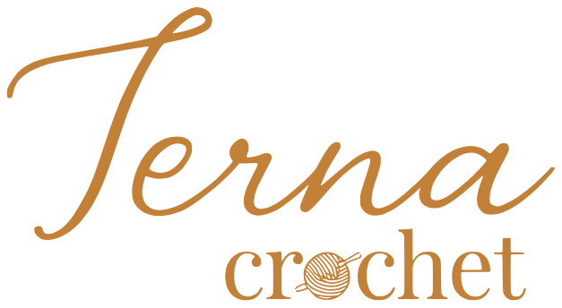
Análise do perfil, referências, kit e manual de marca e os primeiros 6 posts para a Bruna, que faz crochê para a mesa e para vestir.
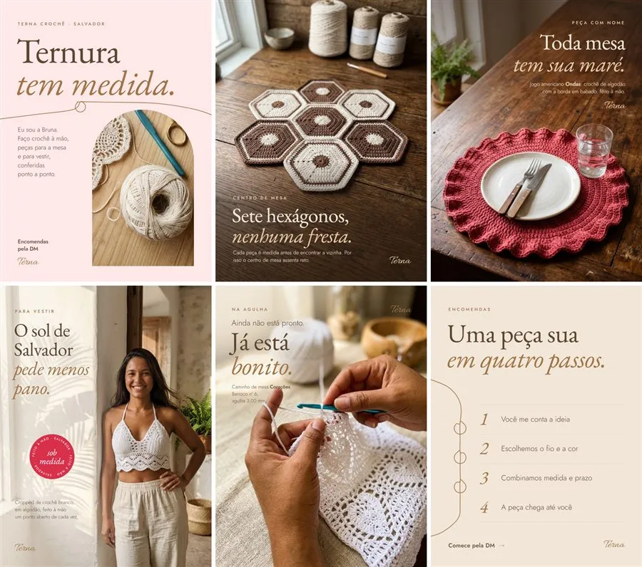
Eram 105 seguidores, 7 posts em 16 meses e quatro meses sem publicar. A bio falava de amor e de história, mas não dizia o que ela faz, como encomendar nem por que o acabamento dela é diferente. O grid misturava cores, letras e duas logos.
A análise mostrou o caminho: os posts que mais engajavam eram a peça pronta, em uso, e a Bruna aparecendo.
O nome pede delicadeza; o argumento de venda é a precisão. Cada post junta as duas coisas: o carinho fica no título e o dado concreto no detalhe (encaixe, fio, agulha, nome da peça).
A identidade usa só o que a marca já tinha: o rosa e o caramelo da logo, o café e o cru das peças. Um fio caramelo sai da peça e sublinha o texto, uma vez por post.
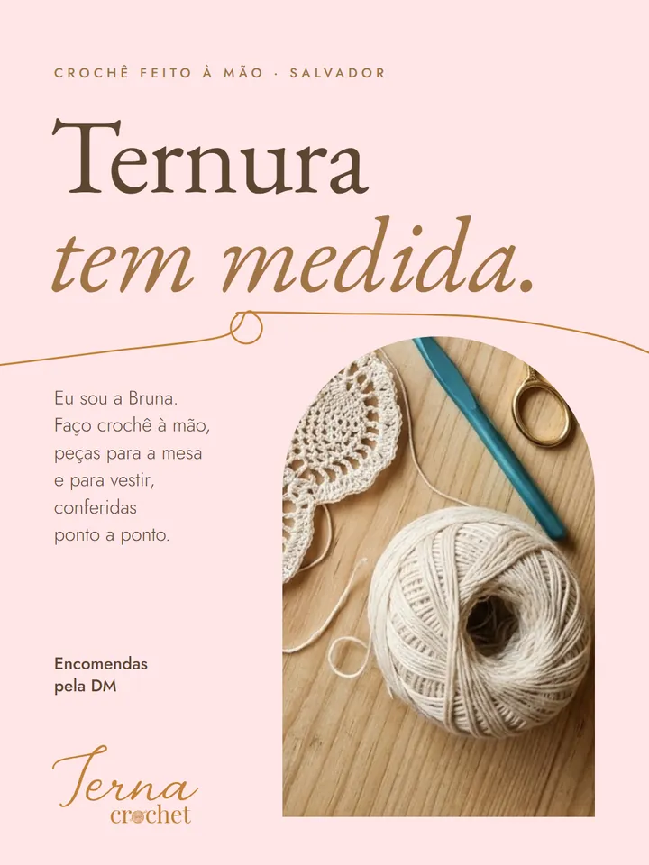
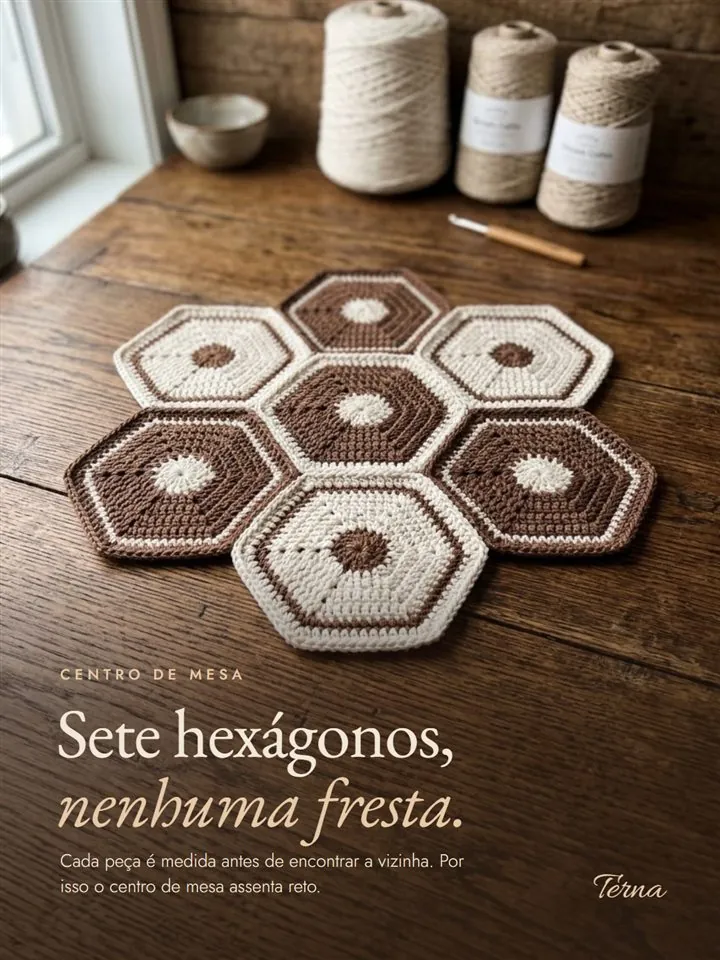
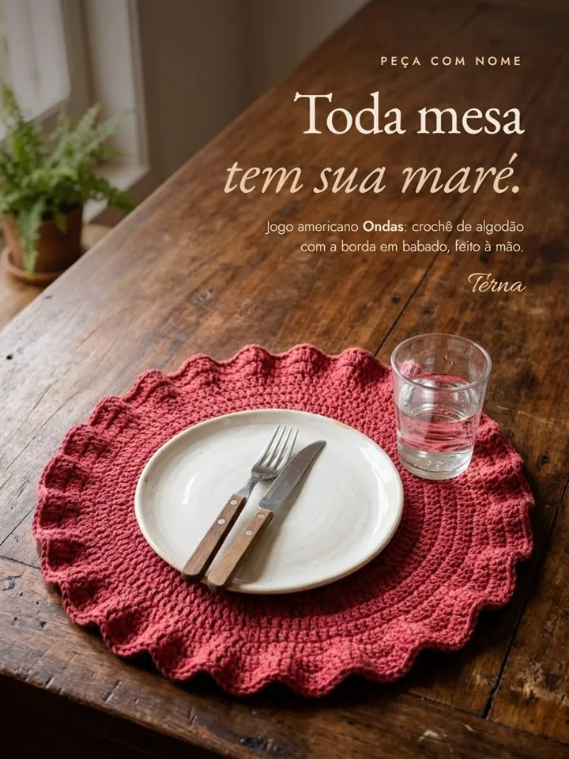
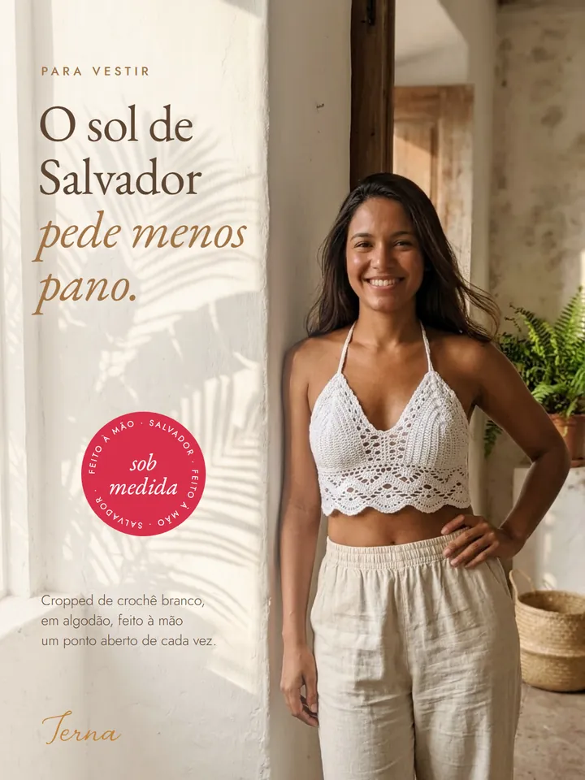
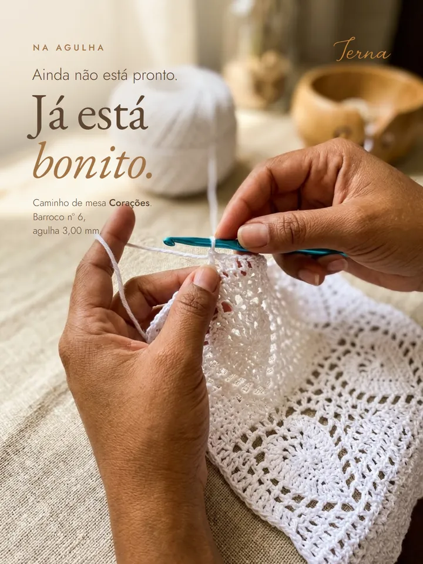
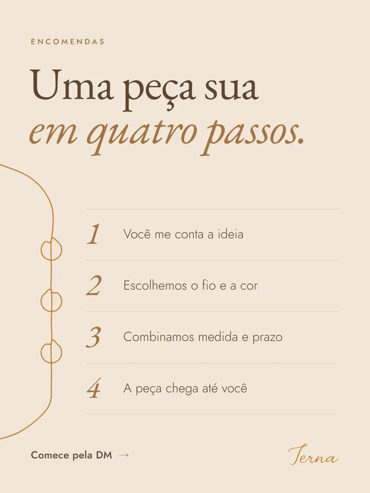
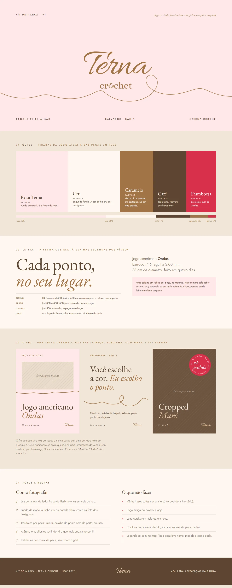
A logo recebida em imagem foi vetorizada e ganhou três versões (principal, assinatura e símbolo) em quatro cores. O manual define fundos, área de proteção, tamanho mínimo, usos incorretos e aplicações.
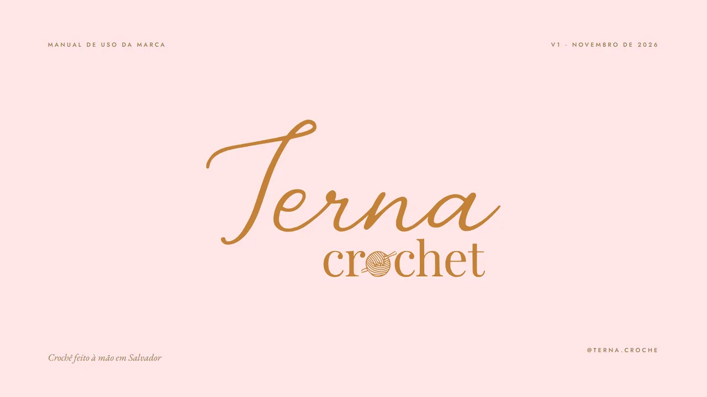
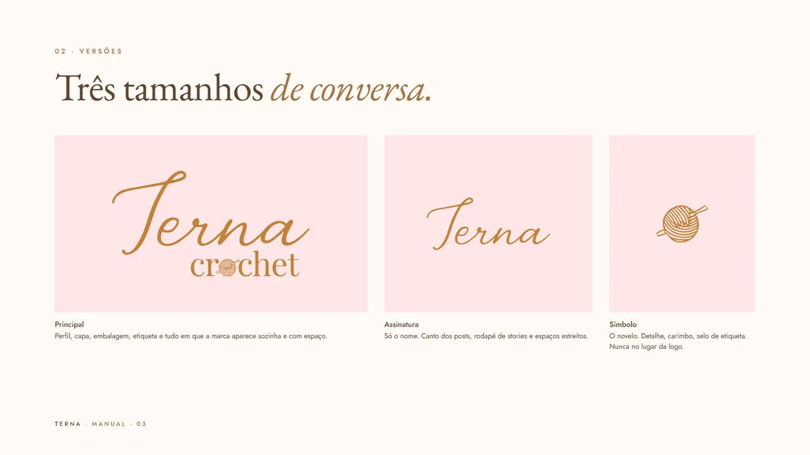
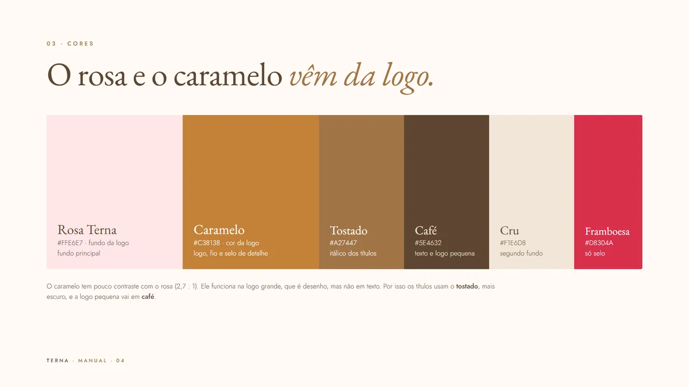
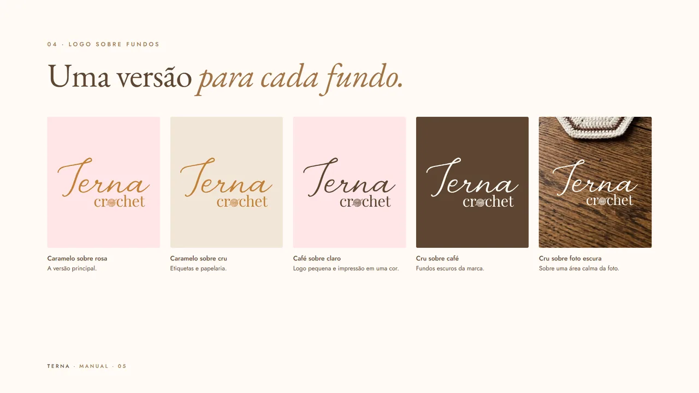
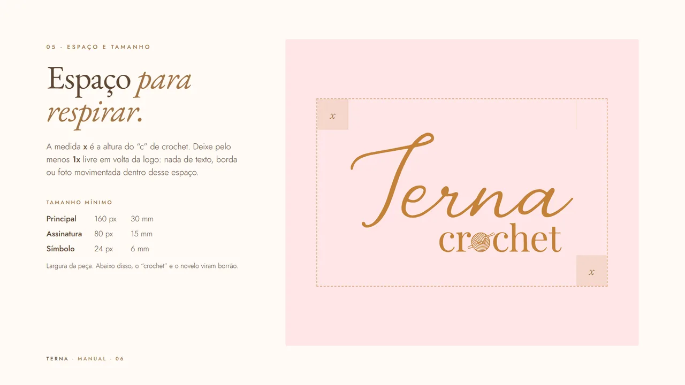
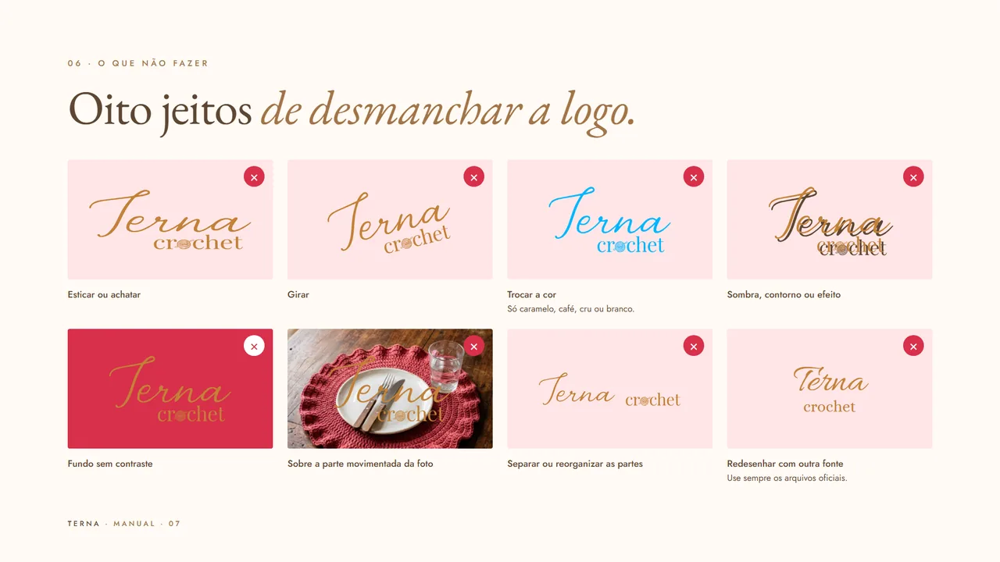
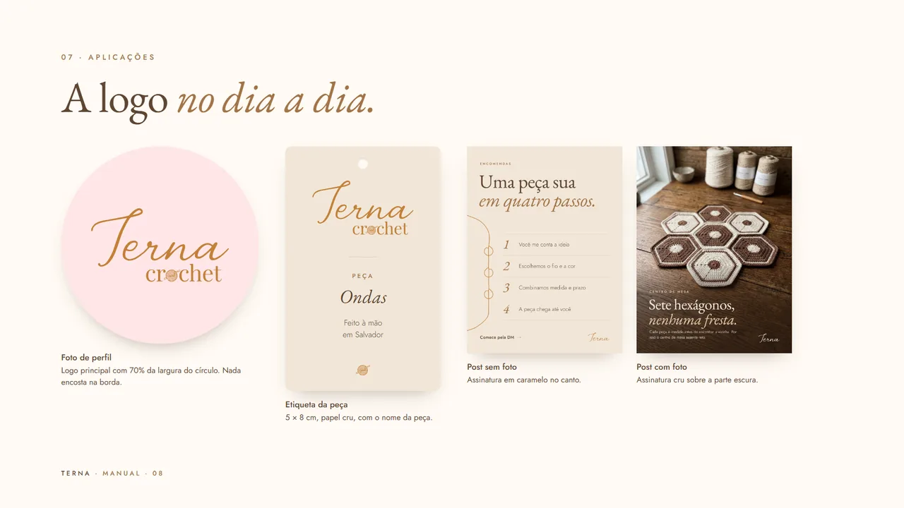
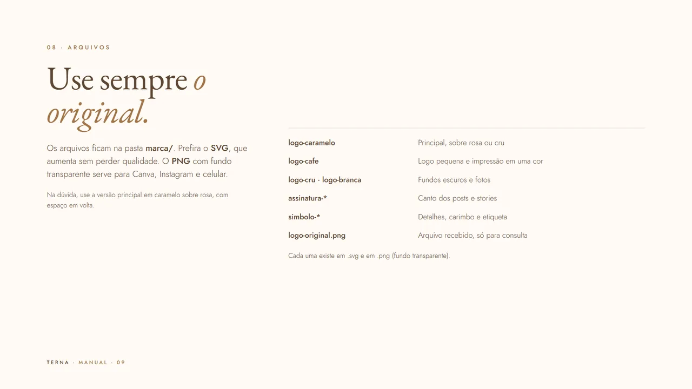
Números, o que engajava e o que faltava na bio e nos destaques.
Projetos de crochê bem avaliados no Behance e perfis do nicho no Instagram.
Logo vetorizada, paleta tirada da logo e das peças, letras, grafismo do fio e regras de uso.
Seis posts com funções diferentes e legendas com um pedido claro.